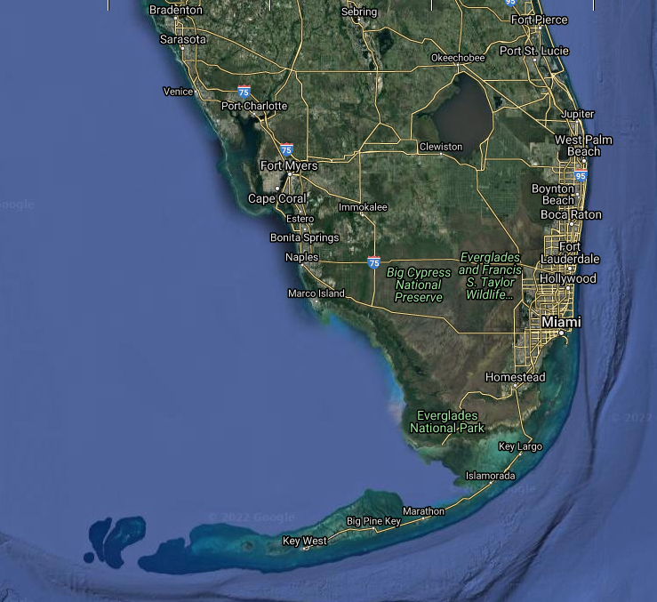

<div class="exo-carousel exo-white-fg">
    <input aria-hidden="true" type="radio" name="cg2" id="cg-a1" checked="" class="exo-dark-orange-bg">
    <input aria-hidden="true" type="radio" name="cg2" id="cg-a2" class="exo-dark-orange-bg">
    <input aria-hidden="true" type="radio" name="cg2" id="cg-a3" class="exo-dark-orange-bg">
    <input aria-hidden="true" type="radio" name="cg2" id="cg-a4" class="exo-dark-orange-bg">
    <input aria-hidden="true" type="radio" name="cg2" id="cg-a5" class="exo-dark-orange-bg">
    <div class="exo-carousel-content exo-light-blue-bg">
        <div class="exo-rounded exo-carousel-item">
            <label for="cg-a5" class="exo-icon exo-icon-navigate-before exo-white-bg"></label>
            <div class="exo-card exo-white-fg exo-dark-orange-bg">
                
                <h4>Thermal</h4>
            </div>
            <label for="cg-a2" class="exo-icon exo-icon-navigate-next exo-white-bg"></label>
        </div>
        <div class="exo-rounded exo-carousel-item">
            <label for="cg-a1" class="exo-icon exo-icon-navigate-before exo-white-bg"></label>
            <div class="exo-card exo-white-fg exo-dark-orange-bg">
                
                <h4>OLCI Chlorophyll</h4>
            </div>
            <label for="cg-a3" class="exo-icon exo-icon-navigate-next exo-white-bg"></label>
        </div>
        <div class="exo-rounded exo-carousel-item">
            <label for="cg-a2" class="exo-icon exo-icon-navigate-before exo-white-bg"></label>
            <div class="exo-card exo-white-fg exo-dark-orange-bg">
                
                <h4>OLCI True Colour</h4>
            </div>
            <label for="cg-a4" class="exo-icon exo-icon-navigate-next exo-white-bg"></label>
        </div>
        <div class="exo-rounded exo-carousel-item">
            <label for="cg-a3" class="exo-icon exo-icon-navigate-before exo-white-bg"></label>
            <div class="exo-card exo-white-fg exo-dark-orange-bg">
                
                <h4>Google Map</h4>
            </div>
            <label for="cg-a5" class="exo-icon exo-icon-navigate-next exo-white-bg"></label>
        </div>
        <div class="exo-rounded exo-carousel-item">
            <label for="cg-a4" class="exo-icon exo-icon-navigate-before exo-white-bg"></label>
             <div class="exo-card exo-white-fg exo-dark-orange-bg">
                
                <h4>SLSTR False Colour</h4>
            </div>
            <label for="cg-a1" class="exo-icon exo-icon-navigate-next exo-white-bg"></label>
        </div>
        <div class="exo-dark-gray-fg">Images Copyright (c) <a href="https://ovl.oceandatalab.com" target="_blank">ESA, OceanDataLab</a> and <a href="https://maps.google.com" target="_blank">Google Maps</a>
        </div>
    </div>
</div>